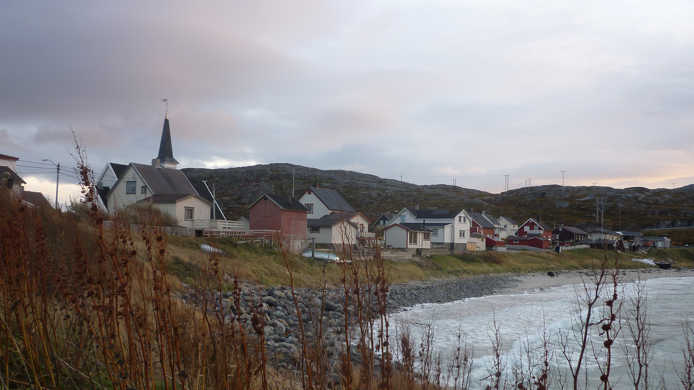
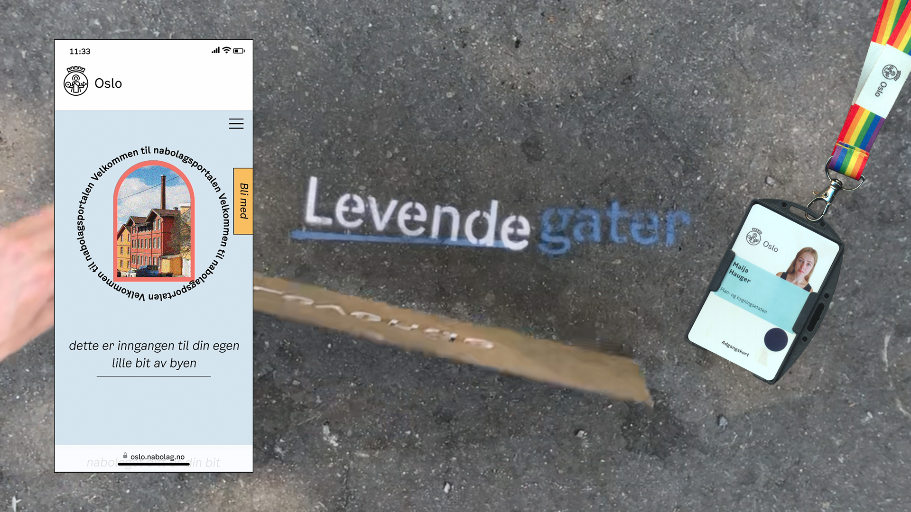
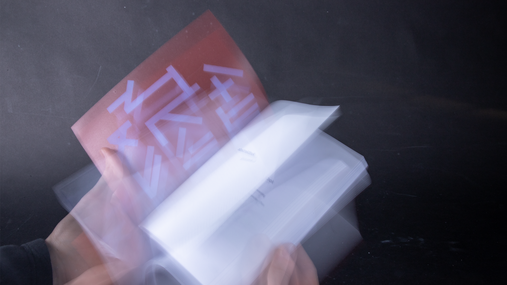

About
As a designer I try to be curious.
I enjoy working in collaborative settings, across disciplines.
I’m especially interested in public sector design, where I use visual design, facilitation, and method
development to create spaces for reflection, learning, and new perspectives.
Currently
Looking for work
Past (2022-25)
Master thesis: Bending the Line.
Facilitated RSD13.
The Morning Studio, Design Academy Eindhoven, Netherlands.
Designer for Levende Gater, PBE, Oslo municipality.
Board member and Leader of student council, The Oslo School of Architecture and Design.

Explored how Nav’s AI strategy could challenge linear organisational logics. By creating aesthetic disruptions and conversational tools,
I helped surface tensions and open reflective dialogue. The outcome was a feedbackloop that allows situated learning through experimentation.
My approach became a method book for an alternative way to deal with change.
Master thesis, 2025.
Collaborator: The Norwegian Labour and Welfare Administration (Nav).
Award: Complexity and Hollistic Approach, Halogen.
Coast as a Host: Initiativsonen

Proposed tools to strengthen belonging in Sør-Varanger by valuing contributions of all scales. These were framed as three steps: recruiting
initiators, cultivating initiative, and unlocking common spaces. Through scalable interventions and digital tools, the municipality can
better support both newcomers and locals, building long-term community resilience.
Digital Commons: Strategic Design for Society, 2024.
Collaborator: Kystutviklingssenteret / Sør-Varanger Utvikling.
With: Anna K. Halvorsen, Jenny Bjørgum, Per R. Christensen.
Co-designed with Bærum Child Welfare Services, this project developed a tool to explore tensions in employees core functions and values. By
framing these “stretched” situations as opportunities for reflection, the tool created a basis for both local peer to peer support and
broader system-level conversations.
Service Design Futures, 2024.
Collaborator: The Child Welfare System, Bærum.
Nomination: Service Design Award.
Levende Gater for Oslo PBE

A digital platform to connect Oslo neighbours by making local resources visible and encouraging sharing. Continued development
with PBE and other student groups led to a consolidated contribution for PBE’s “Levende Gater”–report. The project showed how
design can strengthen urban communities by surfacing hidden value in neighbourhoods.
Service and Interaction Design Specialisation, 2023.
Collaborator: Oslo municipality, Agency for Planning and Building Services (PBE).
With: Ingvild Dekeyser.
Publication: abstrakt bok (book of abstracts)

Giving shape to design students academic work, otherwise easily forgotten and inaccessible to others. I focused on the cover and graphic concept, and
learned how strong collaboration and clear role division can create beautiful things fast. I'm proud of this project because it was fun and full
of learning, as well as being my first paid design job.
Design Research, 2022.
For: Guttorm Ruud.
With: Jenny Bjørgum and Benjamin Romm.
Together with RICK and Dutch schools, we designed tools for students to shape “spaces of ease,” supporting psychological safety as a
prerequisite for creativity. The outcome was a set of adaptable methods that enabled youth to take ownership of their learning environments,
building both confidence and creative expression.
The Morning Studio, 2023.
For: RICK, Netherlands.
With: Zoé Monstrey and Finn Schumacher.